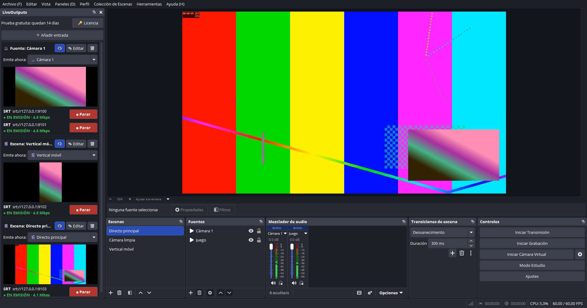

LiveOutputs es un plugin para OBS Studio. Envía cada escena o fuente a sus propios destinos RTMP, RTMPS o SRT, de forma independiente, sin tocar tu directo principal ni tu grabación.
Descargar prueba gratuita de 14 días Ver funcionesVersión completa durante la prueba. Sin cuenta y sin tarjeta. Windows 10/11.

El plugin convierte cualquier fuente o escena en una señal que puedes mandar a cualquier sitio que acepte RTMP, RTMPS o SRT.
Envía cada cámara por separado a un realizador o a un director remoto.
Pasa una escena a otro ordenador por SRT o RTMP y recíbela allí, por ejemplo en otro OBS.
Una imagen limpia, sin gráficos, para quienes necesitan ver tu programa.
Alimenta una pantalla en otra sala o local con la imagen exacta que elijas.
Envía cada fuente a tu propio servidor para grabarla o procesarla por separado.
Aporta cualquier fuente o escena a un servidor tuyo, para distribuirla después.
Algunos montajes reales, dibujados a escala: lo que recibe de verdad cada destino.
Combina RTMP, RTMPS y SRT libremente. Cada destino tiene su dirección, su clave y su estado.
Envía el diseño completo en 16:9 a una plataforma y una versión vertical 9:16 a otra, a la vez, desde el mismo OBS.
Los nombres de plataformas son ejemplos. Pertenecen a sus dueños y no están afiliados a LiveOutputs.
Tu audiencia ve los gráficos. Un invitado, un realizador o una segunda sala recibe la misma imagen sin ellos.
Pensado para streamers y equipos de producción que quieren que cada plataforma reciba la imagen adecuada.
Cada entrada es una escena o una fuente suelta, y cada una tiene su lista de destinos. Emite una cámara a una plataforma y la escena completa a otra, a la vez.
Pega la dirección y la clave. Plantillas listas para las plataformas habituales. SRT admite Stream ID y contraseña.
Emite una versión vertical 1080×1920 de una escena para plataformas móviles mientras tu directo principal sigue en horizontal.
Haz que una entrada siga la escena que OBS tenga en directo, con tus equivalencias de escena a escena. Cambia sin cortar la emisión.
Si un destino se cae, LiveOutputs sigue intentándolo y muestra un aviso claro con el tiempo de corte; cuando se recupera, te lo dice.
Mira el bitrate real y los fotogramas perdidos de cada destino, y previsualiza exactamente lo que envía cada entrada.
Elige tarjeta gráfica (NVENC y otros) o CPU x264, con las mismas opciones avanzadas que ofrece OBS. Guarda perfiles de calidad y audio y reutilízalos.
Nada se emite solo al abrir OBS. Tu configuración nunca se sobrescribe si no se puede leer.
Tres búsquedas habituales, resueltas con un solo plugin.
Elige una cámara, captura o fuente multimedia y envía solo esa fuente a su propio destino RTMP o RTMPS, sin tener que meterla antes en una escena.
Dale a cada plataforma su propia escena: el diseño completo a una, una cámara limpia a otra y una versión vertical a una tercera, todo a la vez.
Genera una señal limpia de una fuente o escena, sin gráficos, por RTMP o SRT para un invitado, un realizador o una segunda sala.
En marcha en pocos minutos.
Ejecuta el instalador y reinicia OBS Studio.
Ve a Paneles → LiveOutputs.
Pulsa Añadir entrada, elige una escena o fuente y añade sus destinos.
Pulsa Emitir en cada destino cuando quieras.
Prueba todo primero. El precio se anunciará en el lanzamiento.
Entérate el primero del precio y la fecha.
Windows 10/11 (64 bits) y OBS Studio 31 o superior.
Descargar LiveOutputs 1.0.0 (Windows)Windows puede mostrar un aviso de «editor desconocido» al ejecutar el instalador, porque el plugin todavía no está firmado digitalmente. Elige «Más información → Ejecutar de todas formas». La firma de código llegará en una versión posterior.
No principalmente. Los plugins de multistream repiten la misma salida del directo en varias plataformas. LiveOutputs está pensado para enviar fuentes y escenas individuales de OBS por la red, cada una con su propia imagen y sus destinos. También sirve para enviar imágenes distintas a plataformas distintas.
No. Cada entrada tiene su propio circuito independiente, así que tu directo y tu grabación no se tocan.
Cada entrada activa codifica su propio vídeo, así que el consumo crece con el número de entradas. Puedes elegir codificador de tarjeta gráfica (NVENC y otros) para liberar la CPU.
Las emisiones se detienen hasta que introduzcas una clave de licencia. Tu configuración sigue guardada.
A cualquiera que acepte RTMP, RTMPS o SRT, con la dirección y la clave que te den.
No. Las claves se comprueban en tu ordenador; no hace falta cuenta ni servidor.